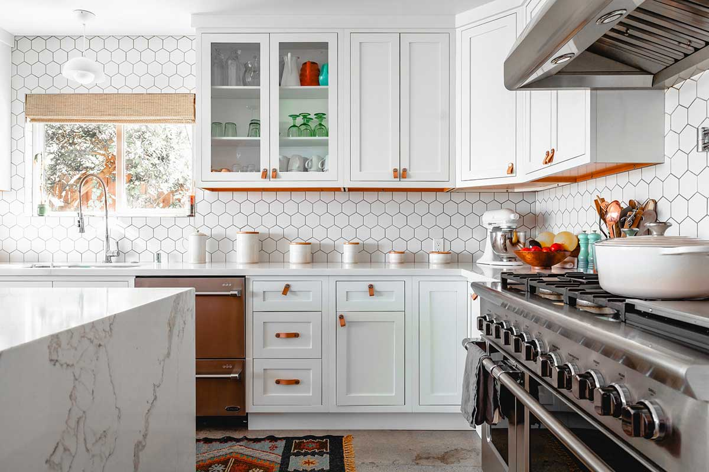
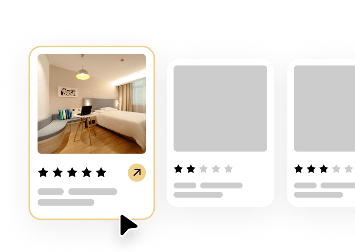
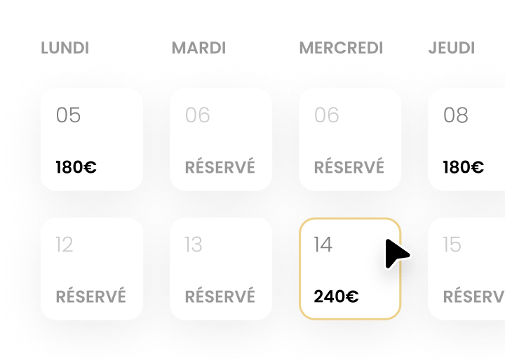
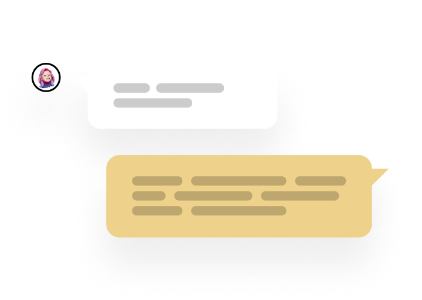
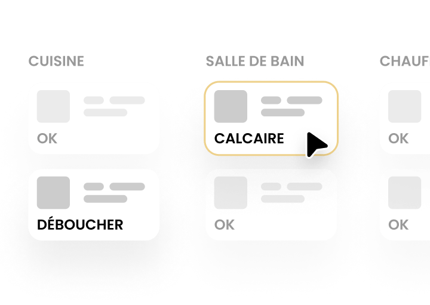
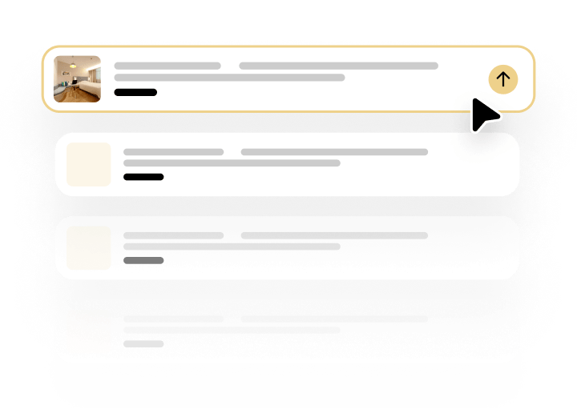

Au bord du Rhin et à seulement 3 km de Bâle, Village-Neuf offre une demande double : tourisme nature le week-end et clientèle frontalière et d'affaires en semaine.
Vous encaissez. Nous gérons tout.

Peu de communes offrent un tel équilibre. Les amoureux de nature viennent pour la Petite Camargue Alsacienne, première réserve naturelle d'Alsace, les sentiers du Rhin et les animations de la réserve ; les voyageurs d'affaires apprécient d'être à 3 km de Bâle dans un cadre calme et verdoyant, souvent à un meilleur prix que côté suisse. Cette complémentarité lisse l'occupation sur toute l'année. Notre gestion dynamique ajuste vos tarifs selon la saison nature, les événements bâlois et les flux frontaliers.

Titre, description et photos qui maximisent les réservations.

Prix ajustés à la demande transfrontalière pour maximiser vos revenus.

Réponses rapides et gestion complète de la relation voyageurs.

Entretien professionnel et linge après chaque séjour.

Notre réseau d'artisans local intervient rapidement.

Visibilité optimisée sur Airbnb, Booking et autres plateformes.
Comment nous fixons vos prix : notre guide du revenue management Airbnb →
Elle s'ajoute à la demande frontalière et d'affaires de Bâle. C'est cette diversité qui assure un bon taux d'occupation toute l'année, pas seulement en haute saison.
Oui : ménage professionnel, gestion du linge et vérifications après chaque départ. Votre logement reste impeccable.
Nous gérons aussi des logements dans les communes voisines, côté français comme côté allemand.
Devis gratuit, réponse sous 24h.
Estimer mon bien gratuitement →